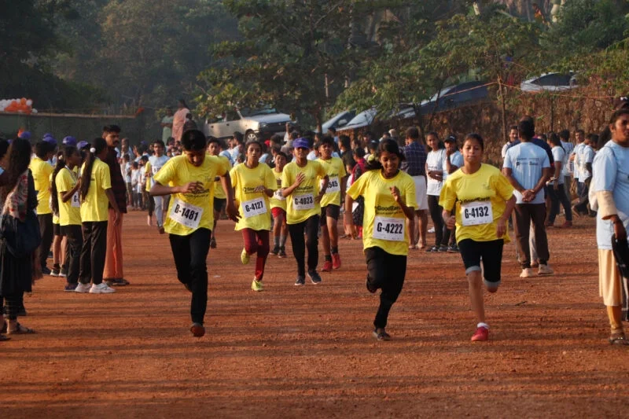

Community
Community

2,500+
Participants
Dec 2022
Event Date
Kannur, KL
Location
Say No To Drugs
Core Theme
GoodEarth, Bangalore, being the title sponsor of the fourth edition of Peravoor Quarter Marathon, “Say No to Drugs,” reinforces the organisation’s commitment to revive and strengthen the sporting culture in the region.
More than 2,500 people participated in the marathon launched on December 24, 2022, at Peravoor, Kannur district, Kerala, transcending age and gender.
While the young girls and youth dominated the scene, the elderly too participated with gusto. The wheel-chair race and children running with their parents made the event all inclusive.
The spirit of true sportsmanship and the importance of participation was evident for every participant was awarded a medal.
Sports Carnival & Cultural Showcase
The week-long sports carnival leading to the marathon featured a vibrant mix of athletic events and traditional Kerala art forms:
Swimming
Athletics
Archery
Target Sport
Chess
Mind Game
Cricket
Team Sport
Football
Team Sport
Volleyball
Team Sport
Kalaripayattu
Martial Art
Duffmuttu
Traditional Art
Chendavadyam
Traditional Art
We believe that playgrounds are a true level-playing field and the marathon stands a true testimony to it.